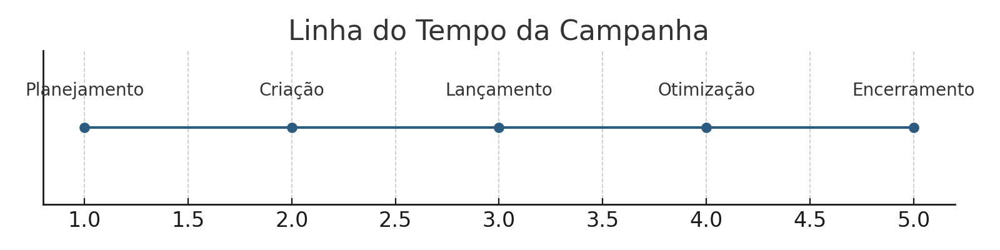
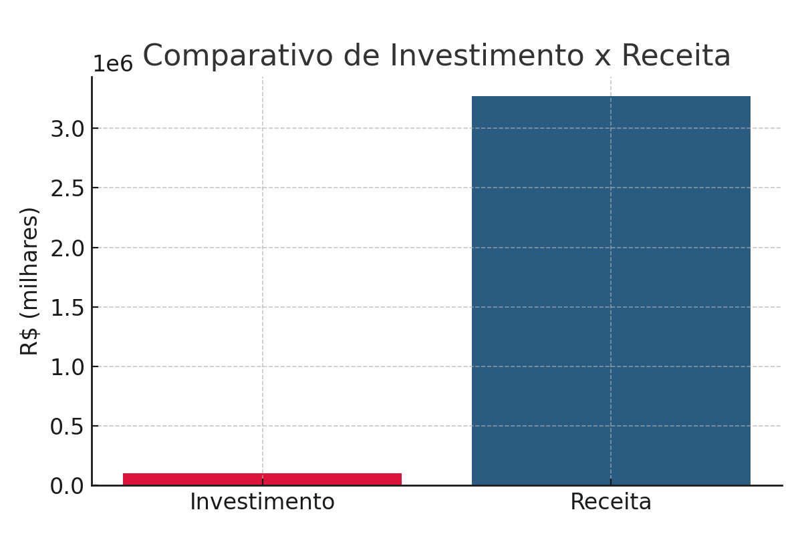
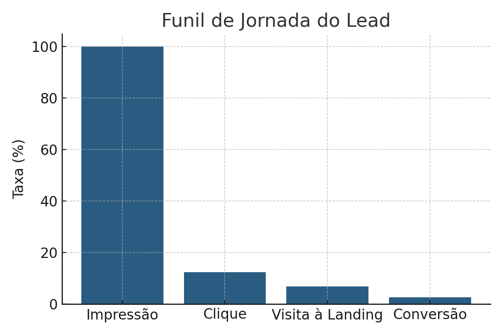

Como a ENS transformou a crise da pandemia em R$ 3,2 milhões de receita com uma campanha digital focada em performance.
Com estratégia full-funnel, automação inteligente e otimização contínua, a UM_digital ajudou a ENS a superar metas de matrículas nos cursos de MBA mesmo em um dos períodos mais desafiadores para a educação no Brasil.
O Desafio
Durante a pandemia, o mercado de educação enfrentou uma queda severa na demanda por cursos de pós-graduação. A ENS precisava:
- Atrair novos alunos para os MBAs em um cenário de retração econômica e incerteza;
- Ampliar a geração de leads qualificados;
- Fortalecer sua marca e presença digital frente à concorrência crescente no EAD.
A Estratégia
Para contornar o cenário desafiador, aplicamos uma abordagem completa de performance, combinando mídia segmentada, tecnologia e inteligência analítica:
- Criação de landing pages otimizadas para conversão;
- Campanhas segmentadas em Google Ads, Facebook e Instagram;
- Automação de e-mails e fluxos de cadência;
- Integração com chatbots, formulários e SMS;
- Business Intelligence para tomada de decisão em tempo real.
A Execução
Nosso plano de ação combinou tática, tecnologia e agilidade em 4 etapas:

- Planejamento Estratégico: definição de personas, canais prioritários e jornada de conversão.
- Estruturação de Ativos: hotsite com foco em UX, formulários inteligentes e conteúdo programático.
- Ativação Multicanal: campanhas full-funnel com foco em geração de leads e remarketing.
- Otimização Contínua: monitoramento semanal via BI e realocação de verba conforme desempenho.
Principais Resultados
- +218 matrículas geradas nos MBAs da ENS;
- R$ 99.823,86 investidos em mídia;
- R$ 3.270.000,00 em receita estimada com as novas turmas;
- ROI de 32x sobre o investimento em mídia;
- CTR de até 2,12% nas campanhas de remarketing (acima da média B2B).

Insights & Aprendizados
- Remarketing superou campanhas institucionais em CTR e conversão;
- Conteúdos temáticos geraram menor engajamento;
- Botões com foco em preço tiveram o pior desempenho de cliques;
- A maior procura ocorreu nas semanas próximas ao início das aulas, validando o timing como fator crítico.

Depoimento
“Mesmo em um dos contextos mais desafiadores do mercado educacional, conseguimos resultados acima das expectativas. Superamos a meta de matrículas com um ROI expressivo, reforçando o valor do MBA ENS.”
– Coordenador de Marketing da ENS
Quer ver o case completo?
A campanha da ENS é um exemplo real de como combinamos estratégia, automação e performance para gerar impacto concreto.
Baixar o Case Completo →
Vamos construir o próximo case juntos?
Se você também quer transformar campanhas em resultados reais, fale com a UM_digital.
Fale com um Especialista →